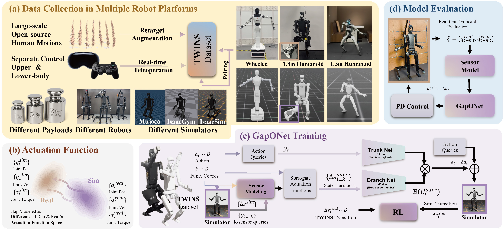
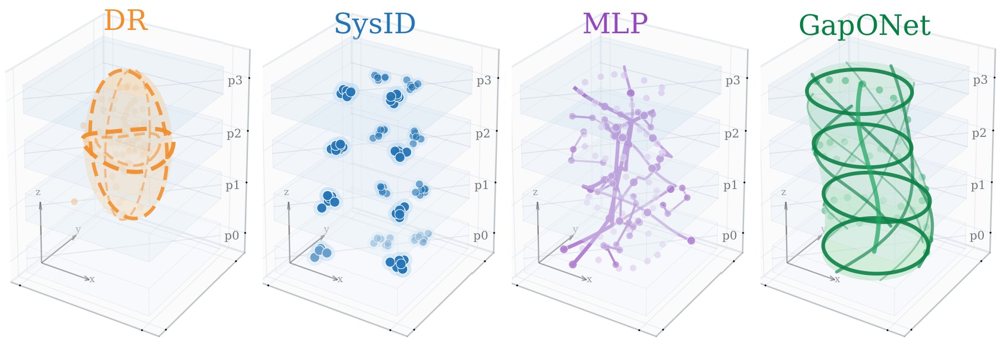
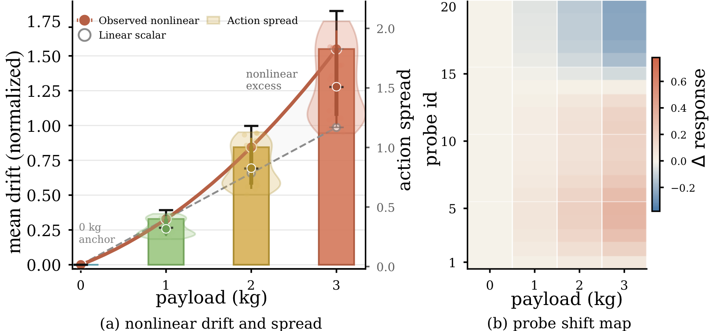
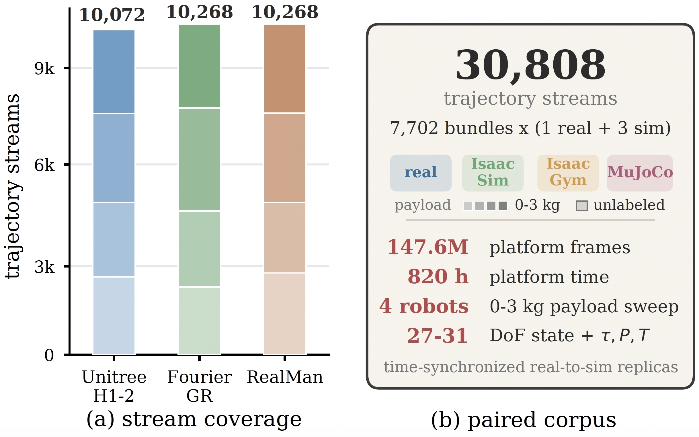
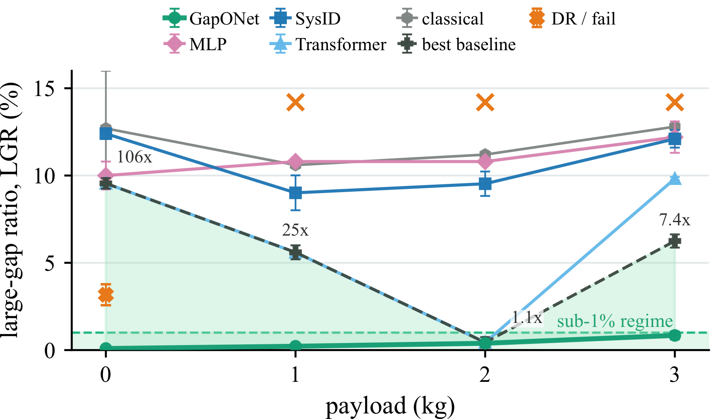

Data Collection
Paired real and simulated rollouts across payloads, robot platforms, and simulators under matched commands.
A dynamics-context operator for payload-aware humanoid sim-to-real transfer, separating the measured dynamics regime from the queried action command.
Deploying a simulation-trained controller on hardware requires bridging a sim-to-real gap, and carrying a payload reshapes this gap in a nonlinear manner through motor dynamics. A payload does not offset a humanoid's dynamics by a constant: it couples with posture, velocity, and acceleration, leaving a state-dependent residual that varies across joints, motions, and units.
GapONet learns this gap as an operator. It maps a measured dynamics context, inferred online from recent motion, to an action-conditioned residual through a DeepONet-style branch-trunk factorization. Keeping the dynamics regime separate from the commanded action lets one correction recombine for payload-motion pairs never seen together.
On three platforms spanning full-size and wheeled humanoids, the paired sim-real large-gap ratio remains below 1% across the full 0-3 kg sweep, including 0.84% at the 3 kg per-wrist limit versus 6.25% for the strongest baseline. Deployed sign-flipped as an online compensator, the same operator transfers to an unseen physical robot with zero calibration.
Video
Method

Paired real and simulated rollouts across payloads, robot platforms, and simulators under matched commands.
The sim-to-real gap is cast as a discrepancy between local actuation-function responses.
Branch and trunk networks factorize dynamics context and action query into a residual correction.
Recent sensor history predicts context online and sends the correction through PD control.

Motivation

Fixed gain tuning, open-loop feedforward, and ordinary parameter fitting cannot close the gap because the residual includes posture-dependent inertia, gravity loading, contact, backlash, and friction effects that are outside a fixed rigid-body parameterization.
The paper treats this residual as an operator on the robot's measured response rather than as a scalar payload offset or a re-identified set of model parameters.
TWINS Dataset
TWINS stores time-synchronized real trajectories and simulator replicas under matched commands, gains, timing, and payload. Each sequence contains one real rollout plus Isaac Sim, Isaac Gym, and MuJoCo replicas, enabling frame-level state-gap analysis and transition-level supervision.

Results

At 3 kg, GapONet reaches 0.84% LGR on Unitree H1-2, 0.79% on Fourier GR, and 0.72% on RealMan while baselines degrade with payload.
With the same context, action, training recipe, and comparable capacity, only the branch-trunk product cuts 3 kg LGR to 0.84%.
The operator is trained on predicted context, so systematic sensor-predictor bias is absorbed rather than requiring true physical parameters.